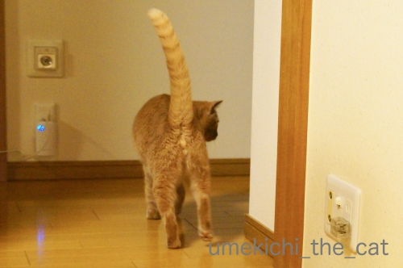
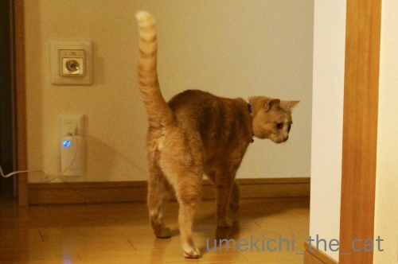
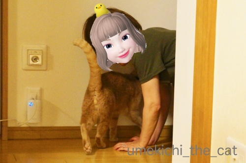
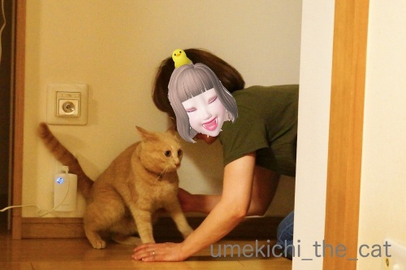
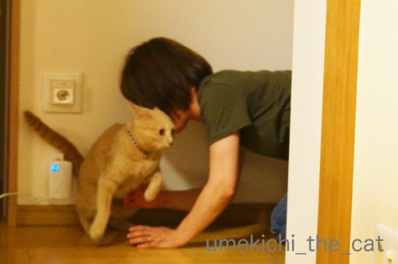
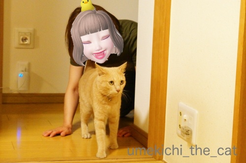
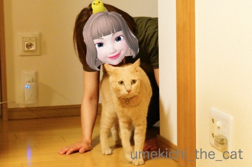
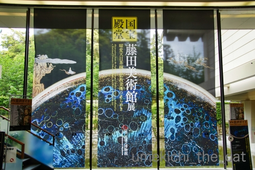
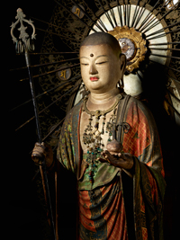
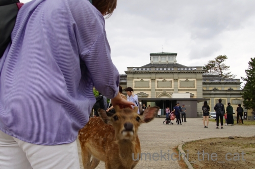

スマアシじゃない四つ足駆動 [梅吉]

何かを警戒する梅吉さん。

「何か」キターっ！！

四つ足のおかーさんです(*>艸<)
ミニカーにぐいぐい迫ってこられるのも嫌いですが
四つんばになったのおかーさんに迫ってこられるのも面白くない様子w
この写真は梅吉が私にすり寄ってきているのではなく
逃げようとする進路を塞がれてワタワタしているところです(⌒-⌒;

ちょっとー、嫌がることないじゃないのよー。

あっ、待ってください！

スマアシミニカーはぶつからないように止まってくれますが
おかーさんは止まりませんよ。
止まらないどころかわざとにぶつかってきて
くんくんスーハーがしつこいですwww
酔っ払いだし〜(⌒-⌒;

真剣に逃げる梅吉さんでした(≧▽≦)
でもね、止めると
と呼びつけられます(*>艸<)
先週の「とほほ」にめげずに奈良に行ってきました！

今度こそちゃんと藤田美術館展を観てきました。
目玉は曜変天目ですがそれ以外の展示品も素晴らしいものばかりでした。
何より保存状態が良いのです。

（画像は奈良国立博物館のHPより）
快慶作の地蔵菩薩立像。
端正な佇まいでいつまでも眺めていたくなります。
そして曜変天目。
会場内に曜変天目を見るための列ができていて10分くらい並んで鑑賞できました。
見込み部分のコバルトのような青い曜変に目を奪われます。
まるで銀河のよう・・・
龍光院のが薄曇りの夜空に輝く星空とするなら
藤田のものは晴天に輝く星空という感じでしょうか。
（稚拙な例えで済みません。他に言いようがないのです）
そしてどちらもそれぞれに素晴らしい・・・・
ただ、これはMIHO MUSEUMの展示の時も思ったのですが
クローズアップされているのは見込み部分だけで
胴回りの照明が落とされていて暗くて全く見えませんでした。
もう少し展示方法に工夫をお願いしたいです。
その暗くてよく見えなかった胴回りですが
会場内に８Kカメラで撮影した映像を見られるコーナーがありましたよ。
８K映像すごいですねー。
肉眼で見るよりも鮮明に曜変天目の細部を見ることができました。
が、８K映像に美しさを感じたかというとそれはありませんでした。
ただすごくはっきり見えるな、という感想。
自分の目が8Kカメラのように鮮明に見ることができなくても
直接観て感じる美しさと映像は別物だなと思いました。
世界に3点しか現存しない曜変天目。残るは静嘉堂の稲葉天目です。
一番華やかで曜変天目らしいと言われています。
浮き出た模様を「猫の肉球のようだ」なんて評する方もいらっしゃるとか。
いつ観に行けるかな♪

再度鹿さんに生え始めのツノを触らせていただきましたよ0(≧▽≦)0
（手を触れる前には「触ってもいいですか？」と鹿さんにお伺いをしています＾＾
鼻タッチをしてくれたらOKのサインと私は思ってます。）

カフェオレ色の梅吉

梅吉 2023年8月10日 永眠


梅吉と出会った譲渡会

犬猫の理由なき殺処分ゼロ
妄想広告
UMEKICHI 光

爆発的に早い！
時々攻撃的！
Thanks to Mr.Boss365
爆発的に早い！
時々攻撃的！
Thanks to Mr.Boss365

梅吉さん行く手を塞がれて耳が下がってます。でも構ってくれないのは嫌なのか~。
曜変天目はそれぞれ全然違うものなのですね。どういう技法かもわからないとか不思議ですね。
鹿さんにちゃんとお断りを入れるちぃさんエライ。
by zombiekong (2019-05-20 03:10)
かなり迷惑そうな顔してますけど
止められるとつまらないのでしょうね＾＾
by ぽちの輔 (2019-05-20 05:59)
梅吉さん、それは嫌がっているというより、遊んでいるってわかってますよぉ。
本当に嫌だったら走って逃げてると思う！
しかもやめると呼びに来るなんて、遊んでもらってるってわかってるのでしょう。あ！もしかしたら逆に遊んであげてるつもりなのかも。
奈良リベンジおめでとうございますー！
by ChatBleu (2019-05-20 06:03)
梅吉さん、行き先を封じ込められていますね！
逃げるのも、やめられちゃうと物足りないのですね(^^)
by ma2ma2 (2019-05-20 07:34)
梅吉さん、お母さんにスリスリしてるのではなく
逃げようとしてたんですね(⌒-⌒; )
でも、心なしか表情は楽しそうで遊んでもらってる感じw
うちはかみさんのストーカーばかりなので
かみさんが４つ足になると喜んで
スリスリゴッチンしに行ってかみさんは猫まみれですw
ノエルのご心配、ありがとうございます(_ _)
ちょっとずつ回復してきました＾＾
by ニッキー (2019-05-20 07:43)
四つん這いになったお母さん(^^)
じゃれあう姿が可愛いですね♪
by チャー (2019-05-20 08:28)
やはり酔っ払っていたか(笑)
こういうことやるのは、酔っ払いだもの！ｗｗ
我が家にもいますよーーーｗｗ
アバターで隠された素顔がどんな表情なのかは想像できるわよ^m^
梅吉くん、イカ耳で垂れ目になって困惑顔♪
快慶作の地蔵菩薩、わたしも見たことあります。ほんっと美しいお顔立ち^^
いいな〜。会いたいな〜
曜変天目。静嘉堂のはね、確かに肉球に見える(笑)
わたしは静嘉堂のは、自然光のなかで見てきたよ。
時間があったら読んでね〜^^
https://rongo-rongo.blog.so-net.ne.jp/2015-11-20
by リュカ (2019-05-20 10:42)
構われ過ぎるのは嫌だけど
構ってもらえないのはもっと嫌？？
そんなところも可愛過ぎますよね(#^.^#)
by きぃ (2019-05-20 10:44)
こんにちは。
梅吉くん、尻尾を立てて警戒顔？
ちぃさん、良いお仕事をしています（笑）
小生下僕として見習いたいです。
曜変天目に再挑戦ですね。展示方法を聞くと残念な感じ？
陶芸を学んでいた時に、
口が触れる縁は「山並」内側は「大河」と捉えて鑑賞すると良いと聞きました。
より大きく見える方が良いみたいです。
曜変天目の「銀河のよう・・・」は素晴らしい感じですね。
神鹿さんも可愛いですね！？(=^･ｪ･^=)
by Boss365 (2019-05-20 10:49)
ふっ、ふっ、ふっ、梅吉さん、かな～り困ってますね(^▽^;)
ウチのも私が四つん這いで後ろを付いていくとものすごく嫌がります。
普通に後ろを歩いても平気なのになぜなのでしょう？？？
面白くてついついやってしまい、追い詰められてキレたこてつの逆襲にあいます。梅吉さん噛まないのがよいこです(#^^#)
奈良博リベンジできて何よりです。
「肉球のような模様」と聞くて俄然見たくなりました♪
by ゆきち (2019-05-20 12:44)
梅吉さん、腰が引けていますね〜（笑）
ちぃさん、酔っ払っているのね（笑）
酔っ払ったおかーさんが後をついてきても、
走って逃げないところが梅吉さんは紳士です。
芸術家ってすごいですね。
曜変天目茶碗の世界で宇宙を一飲みするのですから。
by kiki (2019-05-20 16:53)
【鹿さんにお伺いをしています】
まーなんて細やかな気遣い。
さすがにゃんこと一緒の方は
違いますね！
by あとりえＳＡＫＡＮＡ (2019-05-20 17:02)
ふふふ この四足駆動は最強ですよね♪
絶対逃がさないｗｗ
梅ちゃんがイカ耳になっているところがかわいいです❤
止められると、え？って思うのですねｗｗ(笑)
曜変天目、大好きです！！！
逆に私には猫の肉球にしか見えません（きっぱり）
カリカリを入れたい(猫のご飯皿にｗｗ）
by カトリーヌ (2019-05-20 17:56)
梅吉さん、ちょっと困り顔ですね～。
それもまた可愛いですね。尻尾がぴーんも様子が見て取れます(^_^)
by kou (2019-05-20 18:51)
リベンジ奈良お疲れ様でした。
冒頭の梅吉さんとの絡み(笑 酔っぱらうと猫にっ迫りたくなる気持ち
わかります(笑 Naoちゃんは小さいので何をしても大丈夫ですが、タル嬢は
デカいので下手すると流血の惨事です(;^_^A
時代は4kテレビがどうこうなのに、8kってば！！
仰る通り映像と肉眼の落差は埋められないですよね。美術館、博物館って
どうしてあんなに暗いんでしょう(笑
色褪せによる劣化を防ぎたいのも理解できますが、たいていは暗くてちゃんと見えないものが多いですよね。
by marimo (2019-05-20 19:18)
奈良リベンジ出来て良かったですね！！
私もよく四つん這いやるのですがまぁ～嫌がられます(;´∀｀)
そのくせ一緒に寝るんですよ(^^)
by 50oyaji (2019-05-20 20:25)
分かります！猫って押しが強いですが押されると弱いですよね(#^.^#)
by palpal (2019-05-20 20:40)
ちぃさんも私と同じような事をするんですね(^^;
ユキの顔に自分の顔を擦り付けます。
一日何回もします。
それが私の愛情表現だと思っています。
時々、猫パンチされますが＾＾
by riverwalk (2019-05-20 20:45)
立って歩いているときは、足に絡みつくように寄り添うのに、四つんばいになって近づくと、なぜかちょっと困った感じになりますよね。^^;
仏像様に当てる照明が暗いのは仕方ないかもしれませんね。
でも、８Kカメラよりも肉眼で見るのが一番ですね！
暗闇に目が慣れるまで我慢しましょう（？）^^;
by yes_hama (2019-05-20 22:00)
その展示、僕も来週ぐらいに行きたいな～って思ってます
梅吉くんとのひととき楽しそうです
猫さんの毛並みがお肌にする～って通るのが好き♪
by 藤並 香衣 (2019-05-20 23:42)
梅吉さんは迷惑そうだけど楽しそうだね（ﾟ□ﾟ）
by 英ちゃん (2019-05-21 00:01)
梅吉さん、楽しんでますね。
by ニコニコファイト (2019-05-21 07:03)
zombiekongさん＞
四つん場で追いかけられるのはあんまり好きじゃないけど
構ってもらえないのはつまらない・・・
ちょっぴり難しい梅吉ですwww
梅吉を触る時も「ちょっとー！」とか声をかけるのが習慣になっているので
鹿さんにも声がけしてます。
やっぱりいきなり触るとびっくりさせちゃいますよね・・・
ぽちの輔さん＞
迷惑なんだけど「なにされるんやろ」とドキドキ感もあるのでしょうか。
そのスリルを味わいたい梅吉でした(*>艸<)
ChatBleuさん＞
そうなんです！ちょっと嫌がりながらも
よつんばで追いかけられるドキドキとスリルがたまらないと言うwww
本気に遊ぶときは対等、私も猫になってます(*>艸<)
ので猫先輩に遊んでもらってるって感じでしょうか。
ma2ma2さん＞
追いかけられるスリルもたまらないようでーす(*>艸<)
ニッキーさん＞
イカ耳になって困った顔していますが
追いかけられるスリルを楽しんでいるようでもありますよね(≧▽≦)
ゴッチンしてくれるのも楽しいですよねー！
梅吉は私がフローリングの拭き掃除をしているときに限って
ゴッチンしてくれますwww
なので拭いても拭いてもフローリングには梅吉の足跡が(｣ﾟﾛﾟ)｣
ノエルさんお大事にしてくださいねm(_ _)m
チャーさん＞
私もニャンコになって楽しんでます！！
リュカさん＞
よつんば、酔っ払ってなくてもやるんだけど（爆）
酔っ払うと頻度としつっこさが上がります(*>艸<)
梅吉は困った顔してるけど、ご想像通り私はめっちゃニヤニヤしてますよー！
静嘉堂文庫、いつか行こうと思ってるんだけど
行きにくい場所にあるよね。
もしかしたらリュカさんの家から行くよりも
新幹線（品川）や羽田から行くほうが行きやすいかな。
にしても東京のついでというより静嘉堂文庫を目的に行かないとな
と思ってます＾＾
きぃさん＞
構ってもらえないのはとっても寂しいようで・・・w
そしてよつんばで追いかけられているのも
ドキドキとスリル満載で楽しいようです(≧▽≦)
by ちぃ (2019-05-22 10:04)
Boss365さん＞
おしっぽぴーんは警戒とわくわくの気持ちの表れでしょうか(≧▽≦)
下僕なので梅吉と同じ目線で遊んでいただいて
ときにはこのまま平伏す事も！
そうすると顔を覗き込みにきてあごをガブっとされますwww
大変楽しいひと時でーす＾＾
内側は大河・・・なるほど！！
素晴らしいことを教えていただきましたm(_ _)m
曜変天目茶碗（稲葉天目は見てませんが）結構小さいのです。
子供用の飯碗くらいと想像していただけると良いかな。
がとても大きく見えて見込みをのぞいていると引き込まれるようです。
新鹿さんはつぶらなお目目がとってもキュートですよ(^_－)☆
ゆきちさん＞
普通に後ろをついて歩く・・・
私は梅吉のおちりに足をくっつけるようにして
一緒に歩きますよー(*>艸<)
これはよつんば歩きより「むっかー！」とくるようで
「あにゃーー！！」っと反撃にあいますがその声と怒った顔が可愛くて
時々やっちゃいますwww
ガブももちろん平気でーす！！
肉球のような模様・・・私も気になってしょうがないです。
稲葉天目、関西に出張してくれないかしら・・・
kikiさん＞
この時は酔っ払ってましたが（恥）
シラフの時でもよつんば遊びは良くやります！！
私がよつんばになると戸惑った風にうろうろするのですが
困った気持ち半分遊んでいるわくわく感半分という感じでしょうか＾＾
曜変天目の世界で宇宙を一飲み・・・
お茶の奥深さが垣間見える一文、お見事です！！
あとりえSAKANAさん＞
梅吉も急に触るとびっくりするので
必ず私の存在を知らせてから触れるようにしています。
その習慣が鹿さんにもー！
それに春日神の御使いですから失礼があってはいけないかなぁって＾＾
カトリーヌさん＞
四足駆動・・・ふふふ(ΦωΦ)
かなりしつこいしガブガブされても決してめげません！！
梅吉はよつんばに戸惑っているのと
「なにするんやろ？」とスリルを楽しんでいる風でもあるんですよ＾＾
おおお！肉球天目（笑）ご覧になったのですね！
私も見るのが楽しみです。
ニヤニヤしながら眺める変なおばちゃんにならないように
気をつけます！
kouさん＞
ちょっと困ってもいますが
「わしとあそぶんやな！」とわくわくしている気持ちもあるようです＾＾
本当に嫌ならおしっぽ下がっちゃいますものね！
by ちぃ (2019-05-22 14:44)
marimoさん＞
酔っ払い時はにゃんこに迫りたくなちゃいますよねー！
タルさん、反撃は要注意ですがもふりがいもありそうです＾＾
ひろーいおにゃかに顔を埋めてみたい・・・
美術館＆博物館、光の劣化を言われると返す言葉もないのですが・・・
ライティングに工夫したりガラスなしだったり
自然光で見せてくれたり撮影OKだったり・・・
そんな展示をする事もあるので
実は作品を貸し出す側と借りる側の駆け引きや交渉術が
物を言ってるんじゃ・・・と思う事もありますwww
50oyajiさん＞
あら＾＾
そのくせ一緒に・・・だなんて
密かに自慢ですねー0(≧▽≦)0
palpalさん＞
押されっぱなしも悔しいので迫れる時はグイグイいきますwww
riverwalkさん＞
にゃんこの顔に自分の顔をすりつけるのは
猫飼いの特権＆醍醐味ですよねー！
お顔毛だらけになっちゃいますがそんなの気にならないし＾＾
猫パンチもされるととっても嬉しいです！！
yes_hamaさん＞
ニャンコから絡みつくように寄り添ってきますが
そのまま寄り添って歩くのもお怒りを買いますよねw
よつんばよりも嫌みたいでこれをするともれなく
「あにゃーーっ！」とガブガブされますがそれも楽しいです♪
品質劣化防止のための暗い照明は仕方ないですよね。
照明業界（笑）美術品をよりよく堪能出来るライトを開発してくれないかしら・・・
藤並 香衣さん＞
藤田美術館展、ぜひぜひ行ってみてください！！
見応え十分でしたよ＾＾
猫さんの毛並みがお肌にする〜って気持ちが良いですよね。
洗顔直後や汗ばむ季節は顔中毛だらけになっちゃいますが
それ以上の喜びが！！
英ちゃんさん＞
迷惑そうな顔してますが実はわくわくもしているみたいですよ＾＾
ニコニコファイトさん＞
梅吉も飼い主も楽しみました♪
by ちぃ (2019-05-22 16:45)
迫りくる何者かに警戒している後ろ足！
本気で嫌がってるみたいに見えるのに～
やめたら戻ってくる？いやん、可愛い～＾＾
曜変天目が猫の肉球？ 青や黒で輝いているのに‥
あっ、黒猫さんみたいなのかしら～丸みが可愛くも見えるのかな＾＾
by sana (2019-05-22 23:11)
sanaさん＞
本気で嫌がっているように見せかけて
実はびっくり遊び的なスリルも味わっているようです＾＾
「わっ！」って物陰から出てこられるのも自分が出てくるのも好きな梅吉です。
（物陰に潜んで待ち伏せするんですよwww）
稲葉天目・・・webで画像を見たことしかないのですが・・・
斑紋の出方が肉球チックだったりミッキーマウスだったり(≧▽≦)
言われて私は「なるほどねー」と見てました＾＾
by ちぃ (2019-05-23 16:19)
イカ耳！（笑）
しかし梅さま、実は楽しんでおられるようですね^^
今回は無事目的を果たせてこられたのですね。よかったよかった。
そしてシカさん、きゃわわ（*´∀｀*）
お鼻ごつん、は、ニャンコも共通事項ですね。むしろネコ基準*^^*
by Ja-Kou66 (2019-05-25 00:01)